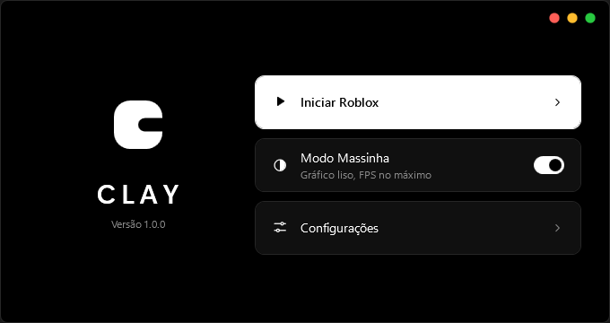
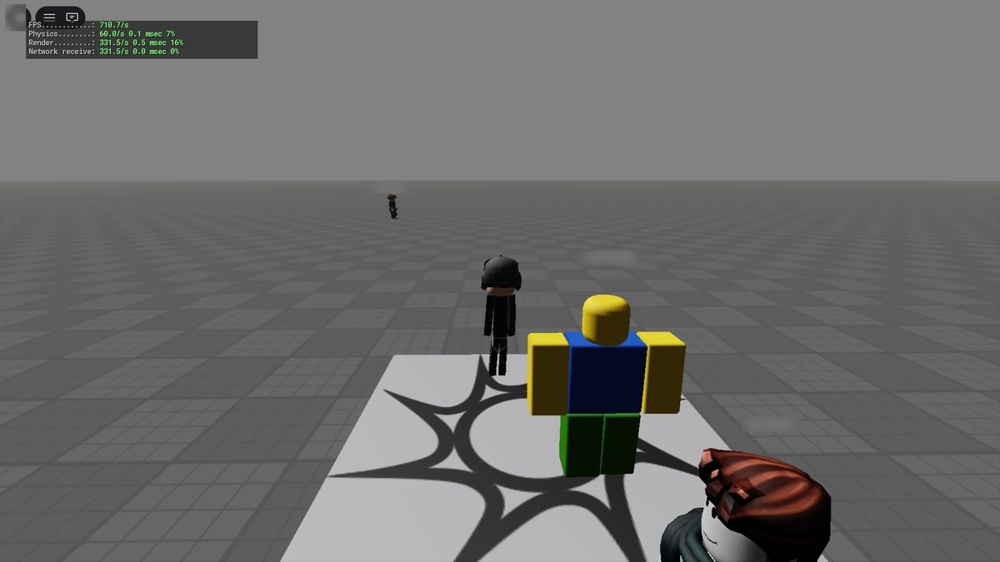
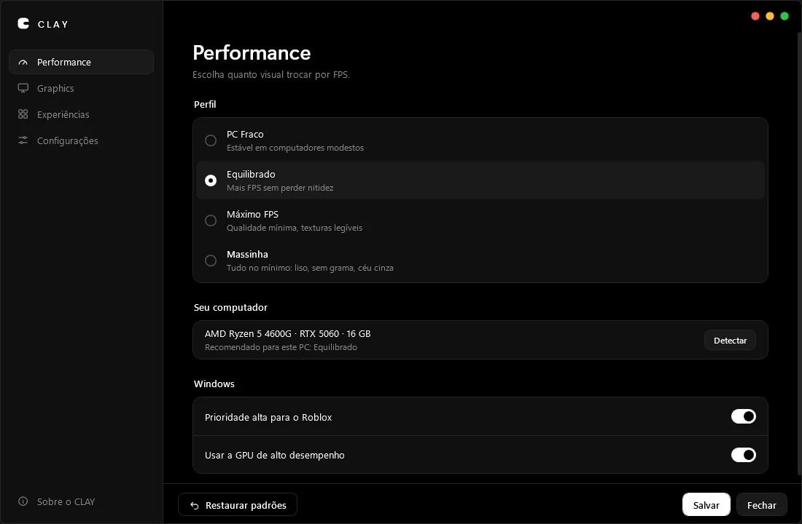
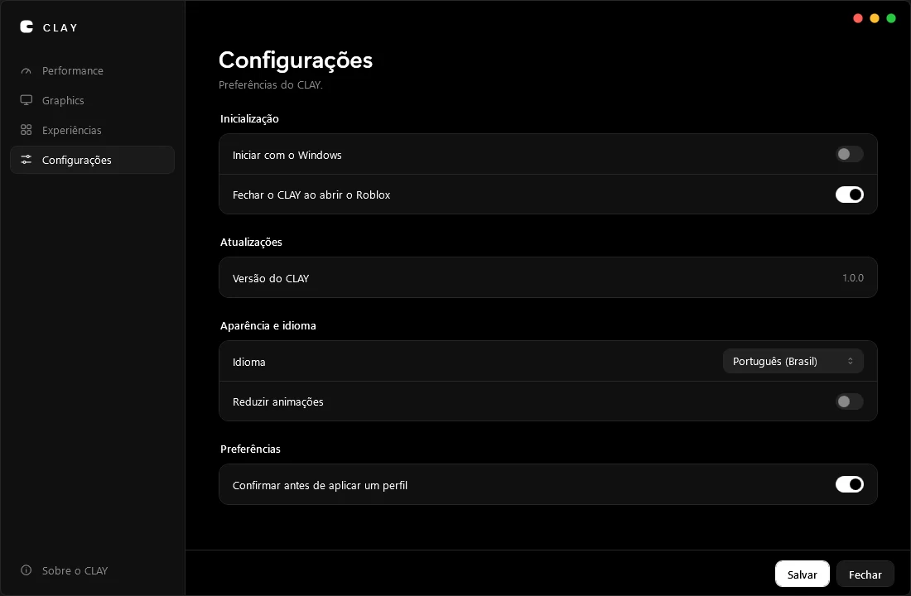

Mais FPS no Roblox, de graça
O CLAY é um launcher pro Roblox no Windows. Liga o Modo Massinha e o jogo fica liso, tipo massinha de modelar, rodando com bem mais FPS. Ele só mexe nas configurações que o próprio Roblox libera.

Quanto de FPS dá pra ganhar
Prints tirados no mesmo servidor, com o contador do próprio Roblox (Shift+F5). O último é num mapa vazio, só pra ver até onde vai.



PC usado: Ryzen 5 4600G, RTX 5060, 16 GB, 1080p. No Crossroads cheio o Modo Massinha ficou entre 325 e 380 FPS, e o print pegou 325. O mapa vazio é o Baseplate. Esse PC trava no processador, então em PC com placa de vídeo fraca a diferença costuma ser maior. No seu pode dar mais ou menos.
O que ele faz
Desempenho
-
Modo MassinhaUm botão. Deixa as texturas lisas (some o granulado do plástico, os pinos e as ondas da água), tira a grama e as nuvens, pinta o céu de cinza e põe a qualidade no mínimo.
-
Configura sozinhoNa primeira vez ele olha seu PC e ajusta tudo pra mais FPS. Em PC fraco baixa a resolução da tela só enquanto você joga, põe a energia no máximo e desliga a gravação do Xbox.
-
PerfisPC Fraco, Equilibrado, Máximo FPS, Massinha e Realista.
-
FPS destravadoÉ o mesmo limite de FPS do menu do jogo, só que já vem no máximo.
-
Menos input lagTela cheia exclusiva, e as otimizações de tela cheia do Windows desligadas só pro Roblox.
-
Prioridade altaFica na bandeja segurando o Roblox em prioridade alta e na placa de vídeo dedicada.
No jogo
-
Painel com Page UpAperta Page Up dentro do jogo, troca o gráfico, a resolução (até 4:3 esticada) e o CLAY reabre o Roblox no mesmo servidor.
-
Jogar pelo siteSe quiser, o botão Jogar do site do Roblox passa pelo CLAY e o jogo já abre do seu jeito.
-
ServidoresLista os servidores públicos, do mais cheio ao mais vazio.
-
Favoritas e tempo jogadoAbre suas experiências pelo CLAY, cria atalho na área de trabalho e guarda quanto tempo você jogou cada uma.
-
Onde fica o servidorMostra a região do servidor em que você entrou.
-
DiscordMostra no seu perfil o que você está jogando.
Resto
-
ModsCursor, fonte e sons. Guarda backup dos originais.
-
LimpezaApaga logs e arquivos temporários velhos do Roblox.
-
Atualiza sozinhoQuando sai versão nova, o CLAY avisa ao abrir.
Perfis
- PC FracoPra PC mais simples
- EquilibradoGanha FPS sem ficar feio
- Máximo FPSQualidade mínima, textura normal
- MassinhaTudo liso, céu cinza
- RealistaGráfico no máximo, com controle de qualidade. Deu 535 FPS no Baseplate.
As telas



Dá ban?
O CLAY usa as Fast Flags da lista que o Roblox liberou e as opções que já existem no menu do jogo. Ele não abre o executável do Roblox, não mexe na memória e não injeta nada. O Roblox já disse que launchers que não modificam o cliente não são afetados pelas medidas contra modificação.
Também não tem nada que dê vantagem. Neblina e paredes continuam lá, o Modo Massinha só deixa o visual mais simples. Não tem multi-instância nem anti-AFK, e o CLAY não guarda o login da sua conta.
Garantia ninguém dá, porque o Roblox pode mudar as regras. Se isso acontecer, o CLAY muda junto.
Como instalar
-
Baixe
O instalador é o
Baixar CLAYCLAY-win-Setup.exe. Baixe só por aqui.Conferir o arquivo (se quiser)SHA-256 do CLAY-win-Setup.exe:
200d10ee5caf3757e335a5adf883b5795ee0a3a160f421f08dbf591d0021a84aAbra o PowerShell e rode
Get-FileHash "$env:USERPROFILE\Downloads\CLAY-win-Setup.exe"(se baixou em outra pasta, troque o caminho). Se não bater com o código acima, apague o arquivo. Os hashes de todos os arquivos estão em checksums.txt. -
Aviso azul do Windows
Se aparecer “O Windows protegeu o computador”, clique em Mais informações e Executar assim mesmo. Isso acontece porque o CLAY é novo e ainda não tem assinatura digital.
-
Pronto
O CLAY abre sozinho depois de instalar. Ligue o Modo Massinha e clique em Iniciar Roblox.
Perguntas
Roda junto com o Bloxstrap?
Pode deixar os dois instalados, só abra o Roblox por um de cada vez. Os dois gravam configurações do Roblox, e vale a do último que abriu o jogo.
Como volto tudo ao normal?
Em Performance tem Restaurar padrões. Se desinstalar o CLAY pelo Windows, ele já devolve o Roblox como estava antes.
Por que não chega a 1000 FPS no meu PC?
Depois de cortar o gráfico, quem segura o FPS é o processador. O CLAY tira o peso da placa de vídeo, mas não deixa o processador mais rápido.
É grátis mesmo?
É. Não tem anúncio nem versão paga.
Versões
-
1.0.9
Tema de Natal: neve leve na tela do CLAY e no site, de 1º de dezembro a 6 de janeiro. Dá pra desligar em Configurações.
-
1.0.8
Opção pra o botão Jogar do site do Roblox passar pelo CLAY, então o jogo abre com as suas configurações mesmo depois de uma atualização do Roblox.
-
1.0.7
O CLAY volta a aparecer em Aplicativos instalados do Windows, então dá pra desinstalar normal por lá.
-
1.0.6
No painel do Page Up, a resolução e o limite de FPS agora mudam com as setas. A lista que abria não pegava o clique por cima do jogo.
-
1.0.5
Tela esticada 4:3 e as opções de FPS direto no painel do Page Up. Dá pra importar Fast Flags por sua conta. O CLAY não trava mais o FPS em nenhum PC.
-
1.0.4
O CLAY olha seu PC e já deixa tudo pronto pra mais FPS. Em PC fraco ele também baixa a resolução da tela enquanto você joga, põe a energia no máximo e desliga a gravação do Xbox. Tudo volta ao normal quando o Roblox fecha.
-
1.0.3
Acha o Roblox em mais lugares. Se ele estiver instalado fora da pasta de sempre, o CLAY procura pelo atalho do Roblox e pelo link do botão Jogar do site.
-
1.0.2
O CLAY avisa quando tem versão nova assim que abre. Dá pra deixar pra depois por um dia, depois disso a atualização é obrigatória.
-
1.0.1
Tela de instalação nova, preta com a logo.
-
1.0.0
Primeira versão.